| PÁGINA PRINCIPAL | ACERCA DE MI | MIS GUSTOS |
MIS GUSTOS FUTBOLÍSTICOS |
| 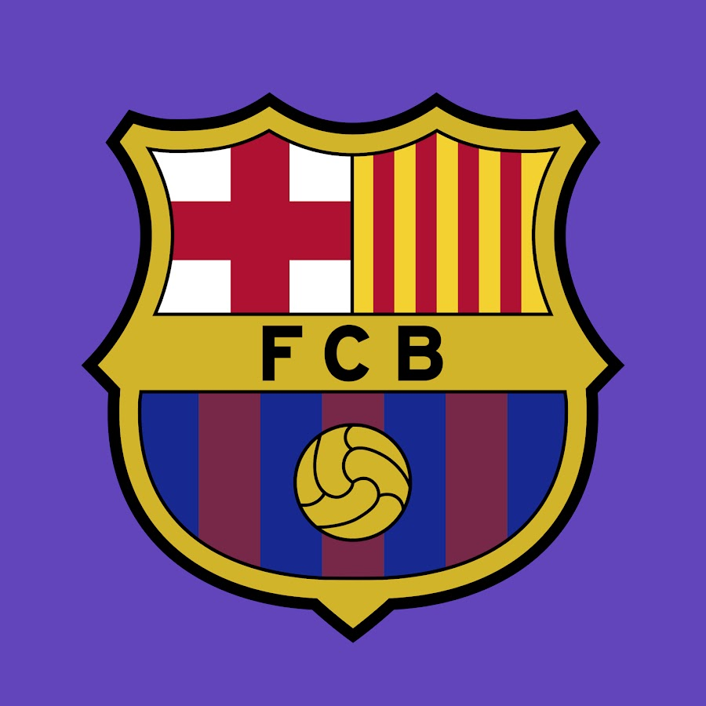 | Mi Equipo Favorito es el Fútbol Club Barcelona de España, lo sigo desde que era pequeño cuando ganaron el primer sextete de la historia entrenados por Pep Guardiola y desde ahí fuí un gran seguidor de su club en las buenas y en las malas Actualmente el Barcelona está pasando por un mal momento debido ya que fue eliminado de champions y europa league pero como culé yo confío que es solo cuestión de tiempo para que logre ganar la champions otra vez, ya que la ha ganado otra vez en 5 ocaciones: En el año 1992 En el año 2005 En el año 2009 En el año 2011 En el año 2015 Es uno de los 5 clubes con más champions de toda Europa el cual ha tenido muchísimas leyendas como Messi, Maradona, Ronaldo Nazario, Ronaldinho, Puyol, Piqué, Xavi, Iniesta, etc |
OTROS DE MIS CLUBES FAVORITOS |
| 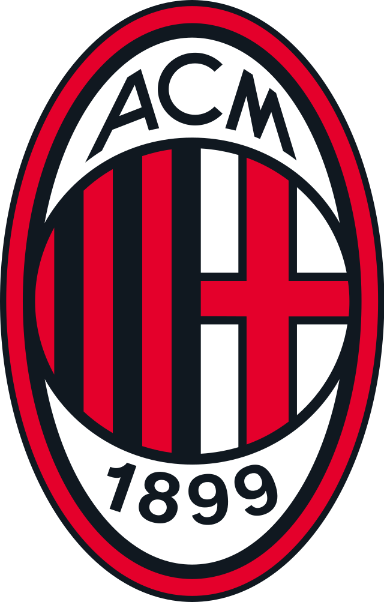 | 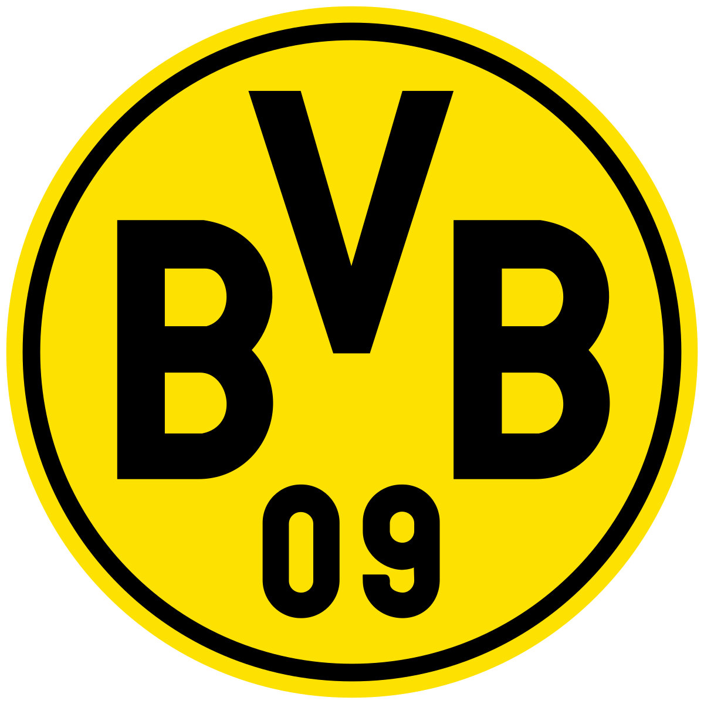 |
| 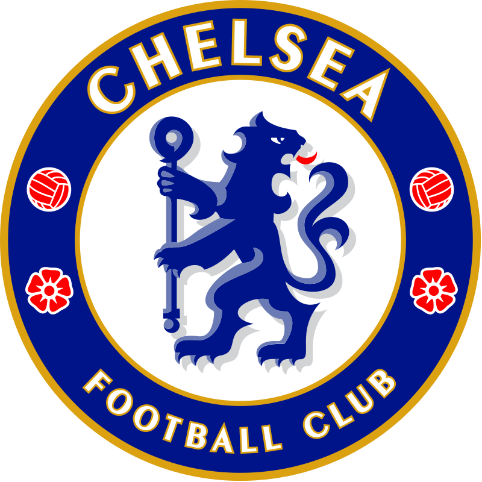 | 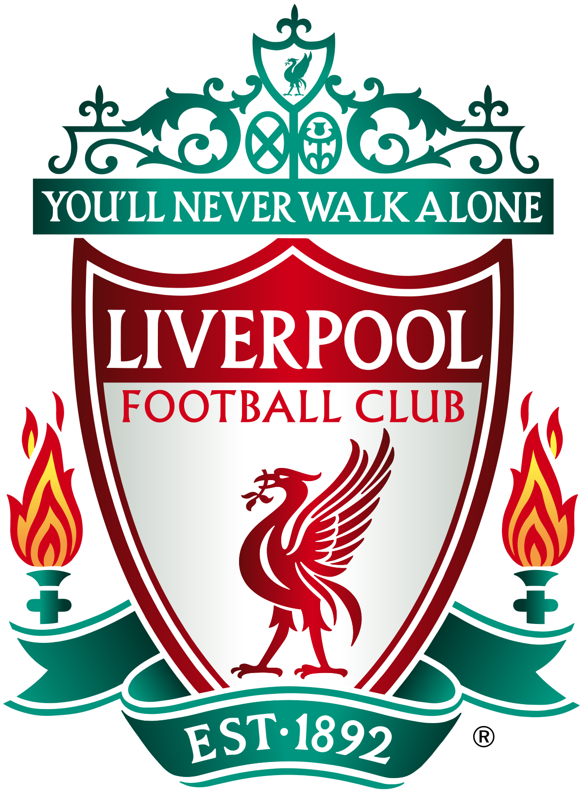 |
MI JUGADOR FAVORITO |
| 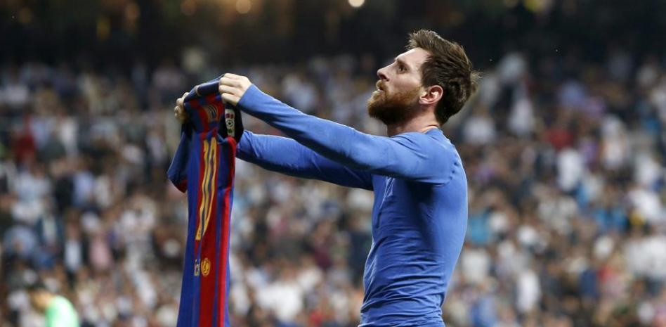 |
MEJORES JUGADORES DE LA HISTORIA |
|
| 1. Lionel Messi | |
| 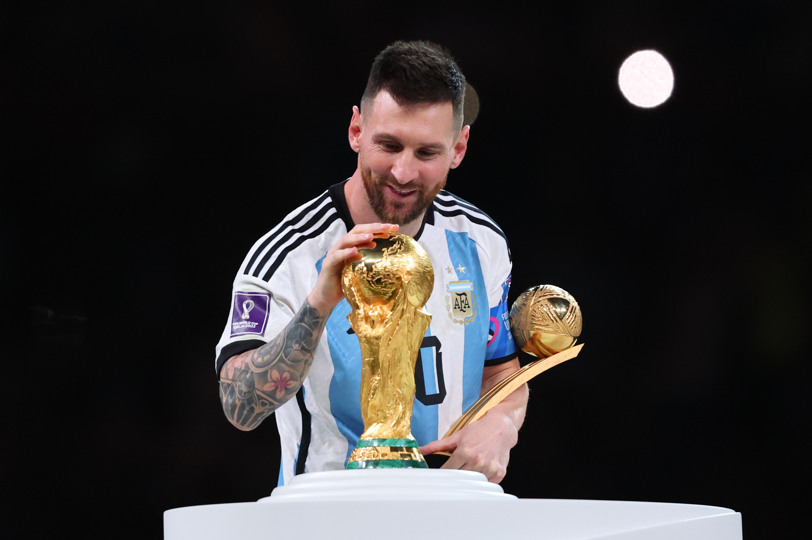 | Lionel Andrés Messi Cucchittini es mi jugador favorito y lo considero como el mejor jugador de toda la historia del fútbol por lo que ha influido en toda la historia del fútbol siendo no sólo el jugador con más balones de oro (7) ,ya que también es el jugador con más botas de oro (6) y además de haber conquistado 4 UEFA Champions League (2005,2009,2011,2015) él conquistó el mundial de Qatar 2022 aunque perdió el primer partido contra Arabia Saudita, Argentina logró reponerse y pudo ganarle a Mexico, Polonia, Australia, Países Bajos, Croacia y ganarle la final a Francia en la mejor final de la historia de los mundiales con un resultado de (3-3) y ganar en penales (4-2) con los penales anotados por Messi, Mbappé, Dybala, Paredes, Kolo Muani y el penal decisivo pateado por Gonzalo Montiel y así dando por tricampeón del mundo a la selección de Argentina.
También ganó la copa América de Brasil 2021 ganandole la final a la anfitriona Brasil por (1-0) con un gol de Di María haciendole una vacelina a Ederson. Poco después le ganaron la Finalissima a Italia con un resultado de (3-0) dándole a Argentina un título luego de 36 años de sequía. Otros de los títulos que ha ganado fueron 10 ligas, 3 Mundiales de Clubes, 3 Supercopas de Europa, 8 Supercopas de España, 7 Copas del Rey ganadas con el FC Barcelona, 1 Ligue One y 1 Super Copa de Francia ganadas con el París Saint Germain (PSG) de Francia y es el club en el que está actualmente. Pero en su juventud con Argentina también logró ganar una medalla de Oro en los juegos olímpicos y 1 mundial Sub-20 y actualmente es el actual ganador del premio The Best y este sería su segundo título ya que el primero lo cosiguió en 2019 junto con su sexto balón de oro. Aparte de ello es el jugador con el mejor Prime de la historia con 91 goles en 69 partidos siendo que nadie lo ha podido superar, ese mismo año ganó su cuarto balón seguido convirtiendose en el jugador con más balones de Oro de la historia (logro que aún tiene y probablemente con la increíble actuación que hizo llegue a ganar su Octavo Balón de Oro). |
| 2. Pelé | |
| 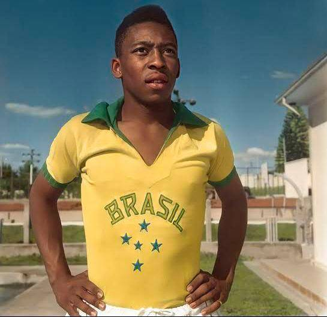 | Edson Arantes do Nascimiento (Pelé) fue uno de los mejores jugadores de todos los tiempos, dominó completamente la época antigua del fútbol siendo el jugador más importante de esta época ya que fue el que convirtió a Brasil en Tricampeón del mundo en las tres ocaciones que pudo (1958,1962,1970) y además pudo ver a Brasil siendo campeón de sus últimas 2 copas que ganó hasta la actualidad (1994, 2002) también él fue dos veces campeón de la Copa Libertadores con el Santos (1962 y 1963) Dos veces campeón de la Copa Intercontinental con el Santos (1962 y 1963) Una vez campeón de la Supercopa de Campeones Intercontinentales (1968) Una vez campeón de la NASL con el New York Cosmos (1977). Fue para muchas leyendas como Cristiano Ronaldo, Messi, Beckembauer, Cruyff, Neymar, Maradona y para muchas personas más como uno de los mejores deportistas de la historia. Aparte de sus títulos él es uno de los jugadores con más goles de la historia y el único que logró conseguir 3 mundiales, siendo así el máximo ganador de este trofeo dado por la fifa desde 1930 hasta la actualidad; Pasaron muchísimos jugadores brasileños en los mundiales pero nunca habrá alguno como Edson Arantes do Nascimiento (Pelé) |
| 3. Diego Armando Maradona | |
| 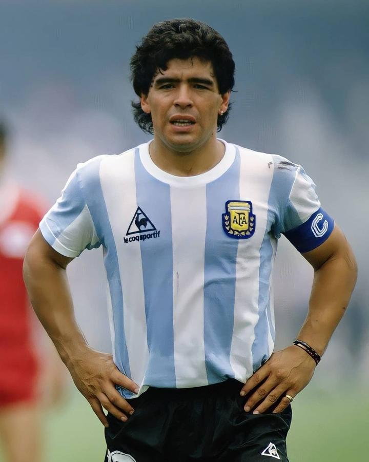 | Diego Armando Maradona es considerado para todos uno de los mejores jugadores de la historia y también la mejor actuación de cualquier jugador en un mundial como lo hizo él en el mundial de México del año 1986 ganándolo y siendo el mejor jugador de ese torneo, tomando el 10 a su espalda él logró hacer el mejor gol en la historia de los mundiales con el histórico 2-1 a la selección inglesa con 2 goles suyos y un gol de Gary Lineker; Sus 2 goles fueron los más recordados de su carrera los cuales fueron apodados "La mano de D10S" y "El gol del siglo". El primer gol fue al minuto 55 tras un rechace alto, Maradona hizo un salto y anotó el gol con la mano y el árbitro como no vió que tocó el balón con la mano le validó el gol, luego al minuto 55 fue el mismo Maradona quien tras llevarse a 5 jugadores ingleses desde la media cancha logró anotar el 2-0 para Argentina. Al minuto 81 tras un tiro de esquina el jugador ingés Gary Lineker logró anotar el gol de descuento para Inglaterra lo que quedó en un resultado final de 2-1 en el marcador. Luego en las semifinales él logró anotar los 2 goles de la victoria contra Bélgica. La final se realizó contra Alemania Federal, la cual lograron vencer con un total de (3-2) así consagrando a Argentina campeón. |
| 4. Cristiano Ronaldo | |
| 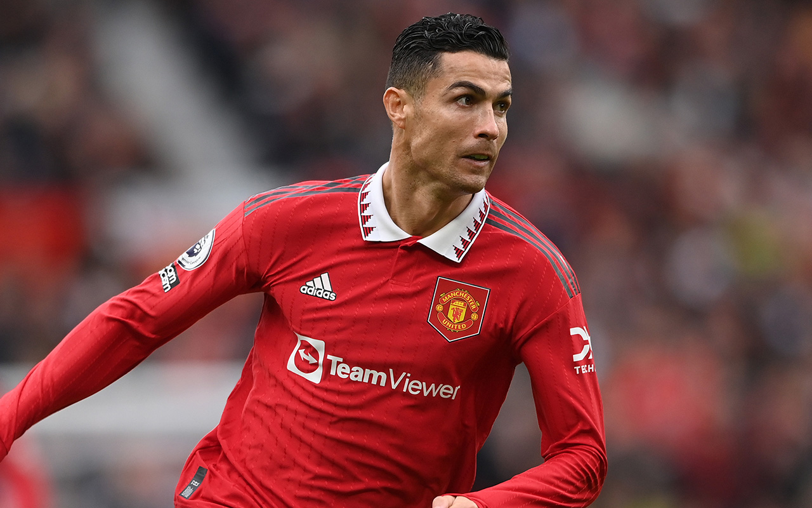 | Cristiano Ronaldo es el jugador más importante de la historia de Portugal ya que él llevó a Portugal a ganar sus únicos 2 títulos internacionales en toda la historia siendo estos 1 Eurocopa en el año 2016 y 1 UEFA Nations League en el año 2019, aparte de haber conseguido eso con su selección, Cristiano Ronaldo es el máximo goleador de todos los tiempos con más de 800 goles superando a Josef Bican (el anterior máximo goleador de toda la historia), también Cristiano Ronaldo protagonizó la mejor rivalidad del deporte junto con Lionel Messi en los increíbles clásicos que se jugaban cuando ellos 2 estaban en el Fútbol Club Barcelona y en el Real Madrid C.F, este último siendo el club al que estuvo Cristiano Ronaldo siendo el máximo goleador del club y siendo figura en 5 UEFA Champions League ganadas por dicho club, gracias a sus actuaciones en estas champions se le puso de apodo el "Mr. Champions", pasó por muchos otros clubes como la Juventus en 2018 después de haber conquistado su quinta y última champions, luego de la Juve pasó por su regreso al Manchester United, en el 2023 se realizó el acuerdo y ahora es jugador del Al Nassr de Arabia Saudita. En los mundiales que jugó, su mejor actuación fue en el de Alemania 2006 logrando ganar un cuarto lugar. No cabe duda que por todo lo que ganó sea considerado uno de los mejores jugadores de fútbol y deportistas de todos los tiempos |
MIS CAMISETAS DE FÚTBOL FAVORITAS |
| 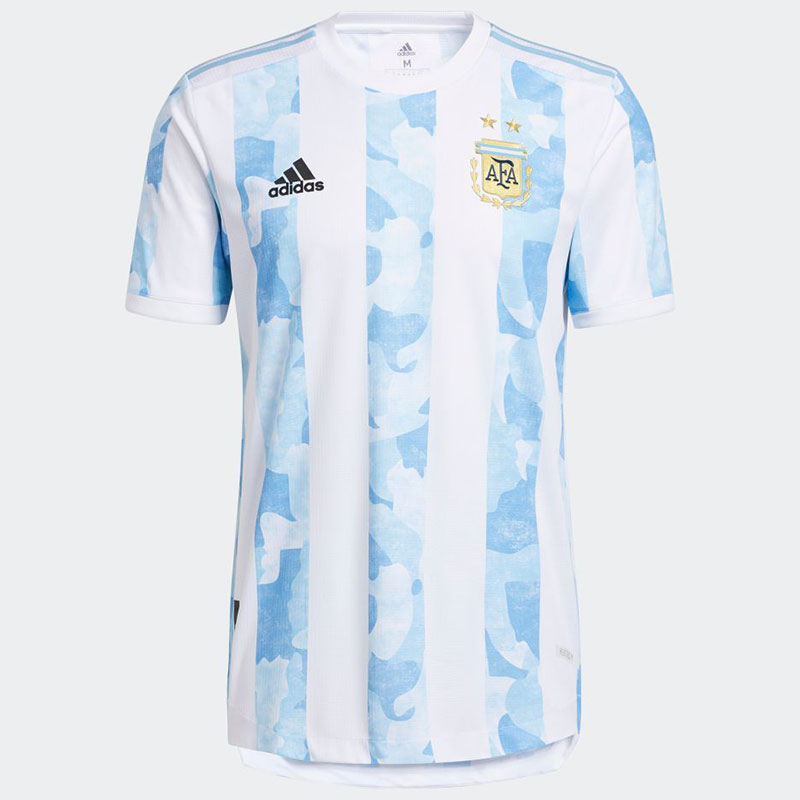 | 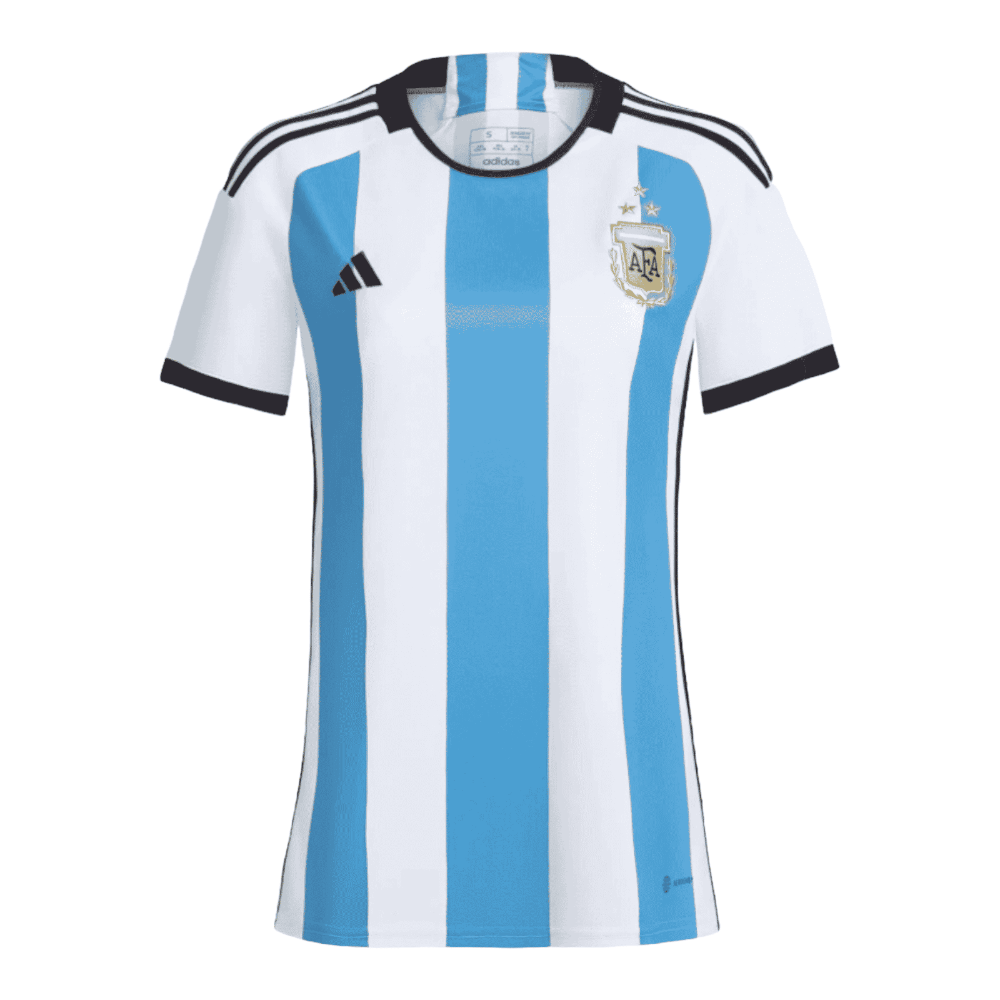 |
| 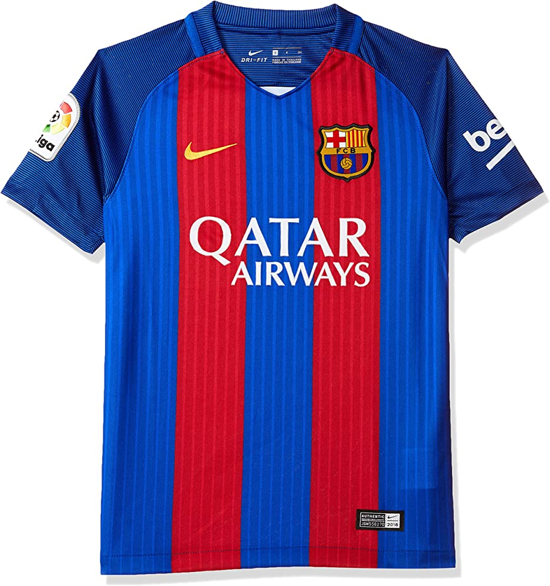 | 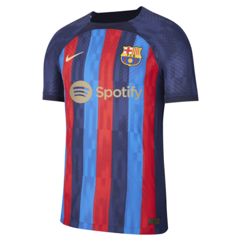 |
| 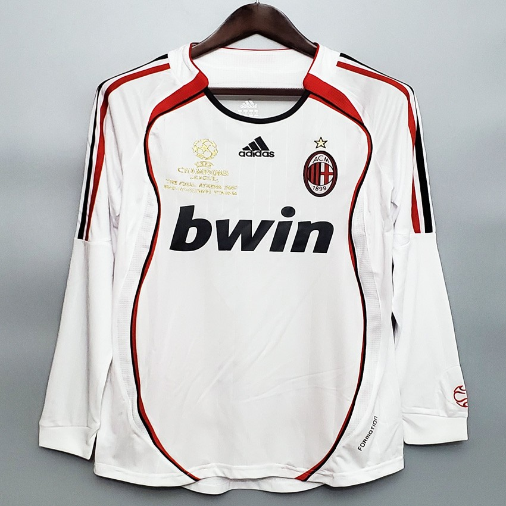 | 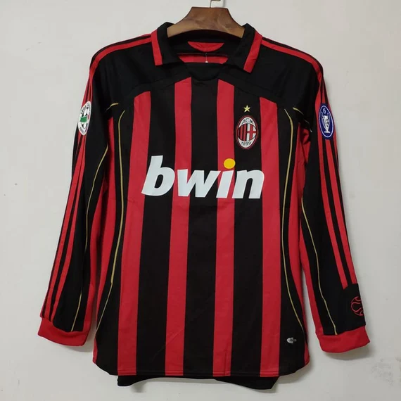 |
OTROS DE MIS JUGADORES FAVORITOS |
|
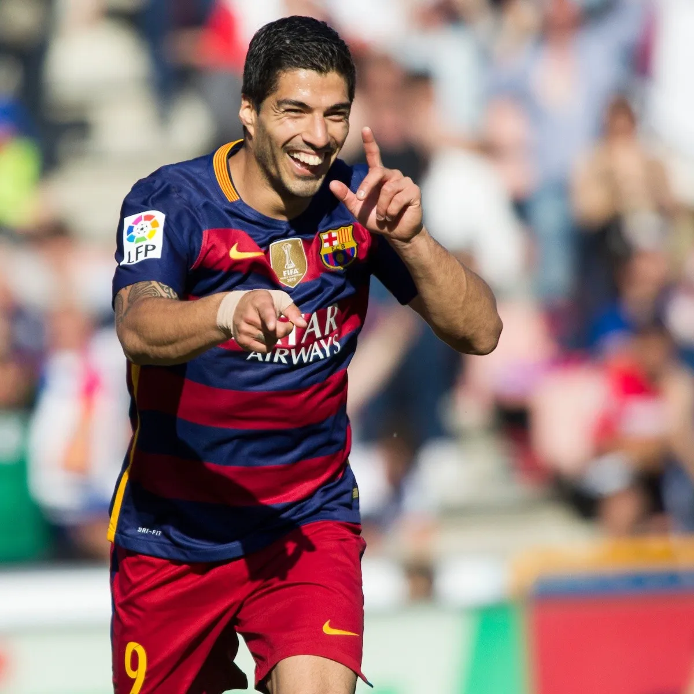 |
| 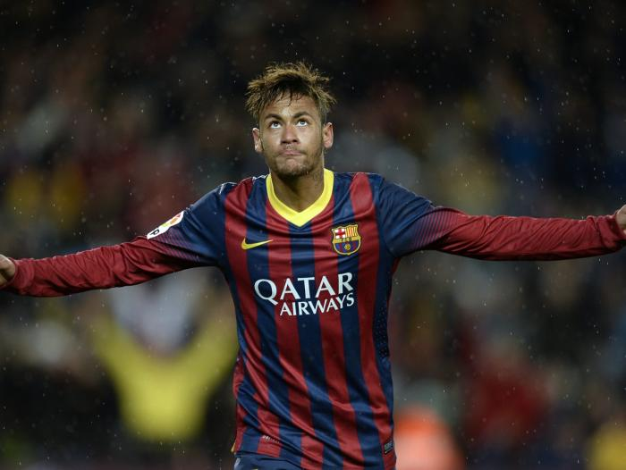 | 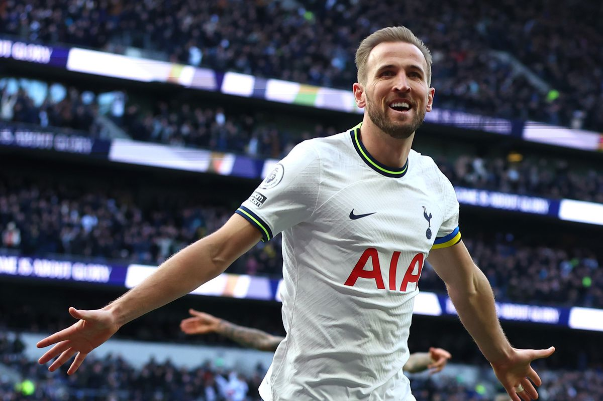 |